Audio event classification, final ResNet34 selection, and local runtime integration.
This page documents the completed audio work in this folder. The comparison notebook evaluates a scratch CNN and four candidate pretrained branches, selects the ResNet34 spectrogram branch, and the final notebook trains that selected branch for the exported runtime model used by the local demo pipeline.
audio_model_comparison_vf.ipynbaudio_resnet_final_vf.ipynbaudio_resnet_final_vf/project/pipeline.pyWhat This Folder Contains
scratch_cnn, final_vf_resnet34, candidate_mobilenet_v3_small, candidate_efficientnet_b0, and candidate_panns_cnn14.resnet34_final.pt, segments audio, runs the CNN, attaches optional context modules, and returns timeline JSON through Gradio and FastAPI.Notebook And Pipeline Coverage
| Source | Covered Work | Documented Outputs |
|---|---|---|
audio_model_comparison_vf.ipynb |
Data collection, train-only augmentation, log-mel normalization, 224 x 224 resizing, 70 / 15 / 15 stratified split, scratch CNN baseline, Final VF ResNet34, PANNs Cnn14 audio embedding model, MobileNetV3-Small, EfficientNet-B0, transfer learning with frozen and fine-tune phases, regularization, AdamW, scheduler, cross-entropy loss, and final production-candidate selection. | Comparison leaderboard, accuracy, macro F1, weighted F1, AUC, ECE, latency, parameter count, model size, notebook-displayed learning curves, confusion matrices, calibration, top confusions, per-class reports, Grad-CAM, LIME-style attribution, and PANNs waveform occlusion. |
audio_resnet_final_vf.ipynb |
Raw dataset scanning, audit, deduplication before split, minority-class augmentation, waveform augmentation, spectrogram masking, MixUp, pretrained ResNet34 backbone, frozen phase, full fine-tuning, custom head with dropout and BatchNorm, differential optimization, temperature calibration, test-time augmentation, and final model export. | Final metrics, training history, dataset audit, classification report, top confusions, dataset split plot, learning curve, confusion matrix, calibration plot, final score summary, Grad-CAM images, LIME-style images, Local CSV/JSON tracking, JSON summaries, CSV tracking files, and exported checkpoint. |
project/pipeline.py |
Audio loading, resampling, segmentation, spectrogram conversion, ResNet34 inference, temperature and TTA use, probability ranking, ambiguity detection, acoustic feature extraction, acoustic context labeling, integrity screening, optional Whisper, optional Hugging Face classifiers, optional pyannote, local speaker grouping, reference speaker matching, and XAI references. | Timeline JSON, clip summary, model metadata, class probabilities, secondary events, features, transcript fields, speaker fields, Hugging Face output fields, integrity fields, XAI reference fields, API result files, and runtime status endpoints. |
Audio Pipeline Flow
glass_break, baby_cry, and gunshot.Branch A: Scratch CNN Baseline
Branch B: Pretrained Candidate Models
final_vf_resnet34 for the later full training notebook.final_metrics.json, final_metrics.csv, and resnet34_final_metrics.json.resnet34_final.pt is the model used by the local runtime pipeline./gradioInteractive browser interface for upload and analysis./modelsCheckpoint readiness, final metrics, class list, and optional runtime availability./analyzePOST endpoint for audio upload and JSON analysis.Scratch And Candidate Model Results
The comparison notebook ranks the scratch baseline and four candidate pretrained branches by the shared evaluation protocol. The notebook output selects final_vf_resnet34 as both the final VF candidate and the best model for later tuning.
| Rank | Model | Accuracy | Macro F1 | Weighted F1 | Precision Macro | Recall Macro | AUC Macro OVR | ECE | Latency ms | Parameters | Model MB | Best Val F1 |
|---|---|---|---|---|---|---|---|---|---|---|---|---|
| 1 | final_vf_resnet34 | 0.94847 | 0.96001 | 0.94847 | 0.96074 | 0.95949 | 0.99510 | 0.01202 | 50.203 | 21,418,054 | 81.850 | 0.95099 |
| 2 | candidate_efficientnet_b0 | 0.92593 | 0.92766 | 0.92485 | 0.91598 | 0.94219 | 0.99209 | 0.02006 | 39.208 | 4,015,234 | 15.617 | 0.90509 |
| 3 | candidate_mobilenet_v3_small | 0.87601 | 0.87157 | 0.88031 | 0.86629 | 0.89583 | 0.98274 | 0.06073 | 10.913 | 1,524,006 | 5.953 | 0.81495 |
| 4 | candidate_panns_cnn14 | 0.86634 | 0.82661 | 0.86475 | 0.80506 | 0.89142 | 0.98161 | 0.16190 | 3912.743 | 82,363,669 | 314.292 | 0.82696 |
| 5 | scratch_cnn | 0.77617 | 0.64481 | 0.76555 | 0.64229 | 0.65288 | 0.94487 | 0.03977 | 22.380 | 340,358 | 1.315 | 0.71567 |
final_vf_resnet34 is recorded as the best model for later tuning in the notebook output.0.6 in the comparison output.audio_resnet_final_vf.ipynb with the final configuration.Final Training Configuration And Metrics
0.7 and test-time augmentation shifts [-8, 0, 8].| Metric | Value |
|---|---|
| Model | resnet34_final |
| Accuracy | 0.96978 |
| Macro F1 | 0.92483 |
| Weighted F1 | 0.97046 |
| Precision macro | 0.89739 |
| Recall macro | 0.98025 |
| AUC macro OVR | 0.99722 |
| ECE | 0.01605 |
| Temperature | 0.7 |
| Parameters | 21,484,742 |
| Model size | 82.106 MB |
| Latency | 4.197 ms |
| Best validation F1 | 0.91345 |

Dataset Sources, Class Counts, And Split Counts
| Source | Files |
|---|---|
| ESC-50 | 2,000 |
| UrbanSound8K | 8,732 |
| RAVDESS | 1,440 |
| CREMA-D | 7,442 |
| Gunshot | 851 |
| Siren | 600 |
| BabyCry | 457 |
| Music | 64 |
| Class | Raw | Dedup | Capped |
|---|---|---|---|
| alarm_signal | 1,878 | 1,825 | 1,800 |
| baby_cry | 497 | 495 | 495 |
| background | 7,824 | 7,811 | 1,800 |
| glass_break | 40 | 40 | 40 |
| gunshot | 1,225 | 1,123 | 1,123 |
| human_voice | 10,122 | 10,093 | 1,800 |
| Class | Train | Validation | Test |
|---|---|---|---|
| alarm_signal | 1,260 | 270 | 270 |
| baby_cry | 900 | 74 | 74 |
| background | 1,260 | 270 | 270 |
| glass_break | 900 | 6 | 6 |
| gunshot | 1,000 | 169 | 169 |
| human_voice | 1,260 | 270 | 270 |
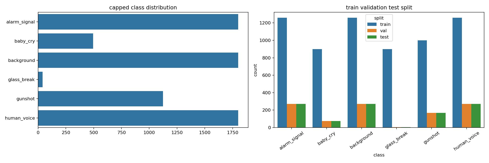
Per-Class Results And Confusions
| Class | Precision | Recall | F1 Score | Support |
|---|---|---|---|---|
| gunshot | 0.97688 | 1.00000 | 0.98830 | 169 |
| glass_break | 0.50000 | 1.00000 | 0.66667 | 6 |
| alarm_signal | 0.98155 | 0.98519 | 0.98336 | 270 |
| human_voice | 0.97398 | 0.97037 | 0.97217 | 270 |
| baby_cry | 0.98667 | 1.00000 | 0.99329 | 74 |
| background | 0.96525 | 0.92593 | 0.94518 | 270 |
| accuracy | 0.96978 | 0.96978 | 0.96978 | 0.96978 |
| macro avg | 0.89739 | 0.98025 | 0.92483 | 1,059 |
| weighted avg | 0.97235 | 0.96978 | 0.97046 | 1,059 |
| True Class | Predicted Class | Count |
|---|---|---|
| human_voice | background | 6 |
| background | human_voice | 6 |
| background | alarm_signal | 5 |
| background | glass_break | 4 |
| background | gunshot | 4 |
| alarm_signal | background | 3 |
| human_voice | glass_break | 2 |
| alarm_signal | human_voice | 1 |
| background | baby_cry | 1 |

Saved Evaluation Visuals
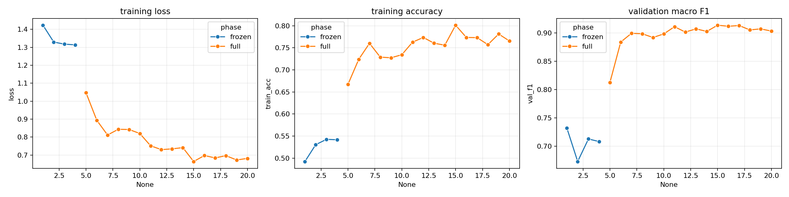
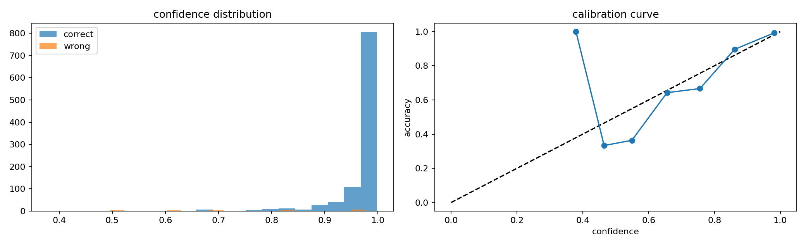
Whisper, Hugging Face, Speaker, And Integrity Details
The runtime pipeline contains the final ResNet34 event classifier plus context modules that are controlled by the demo UI and API flags. The classifier runs for every segment. Voice and context modules run only when enabled and relevant to the segment.
human_voice segments with sufficient duration, the pipeline can load Whisper tiny, base, or small. The output stores transcript text, language, and transcript status per segment.superb/wav2vec2-large-superb-er and stores the top audio-classification predictions under hf_emotion.Vansh180/deepfake-audio-wav2vec2 and stores the returned synthetic-voice screening predictions under hf_deepfake.pyannote/speaker-diarization-3.1. It uses the configured Hugging Face token and assigns speaker labels to overlapping voice segments.speaker_1, speaker_2, and later groups.high_alert, distress_signal, speech_context, high_arousal_voice, and ambient_context.| Runtime Control | Pipeline Field | Stored Output |
|---|---|---|
| Transcription | transcription, whisper_model | transcript, language, transcript_status |
| Local speaker grouping | speaker_grouping | speaker and summary speaker group count |
| pyannote diarization | pyannote_diarization | pyannote speaker assignment or local fallback status |
| HF emotion classifier | hf_emotion | hf_emotion.status, model id, labels, and scores |
| HF deepfake classifier | hf_deepfake | hf_deepfake.status, model id, labels, and scores |
| Acoustic context | acoustic_context | segment-level acoustic context label |
| Integrity screen | integrity | clip-level status, issue list, SNR, peak, RMS, clipping ratio |
| XAI references | xai | matching final Grad-CAM and LIME-style artifacts for detected labels |
| Reference matching | prototype_dir | reference_speaker label, distance, and status |
How The Exported Model Is Used In The Pipeline
The runtime class in project/pipeline.py loads the exported ResNet34 checkpoint, applies the same class list, reads calibration settings from the checkpoint or metrics files, and returns a structured timeline for each uploaded audio file.
Runtime Decision Logic
- Audio is loaded and resampled to 32 kHz mono.
- Segments use 3.0 second windows and 1.5 second hop.
- Each segment is converted to a 96-bin log-mel spectrogram and resized to 224 x 224.
- ResNet34 probabilities are averaged across TTA shifts.
- Close secondary predictions are exposed through
decision_statusandsecondary_events. - Voice segments can receive Whisper transcription and optional speaker or Hugging Face context module outputs.
Final ResNet34 Grad-CAM And LIME-Style Outputs
The final output folder includes one Grad-CAM and one LIME-style spectrogram attribution artifact for each target class.

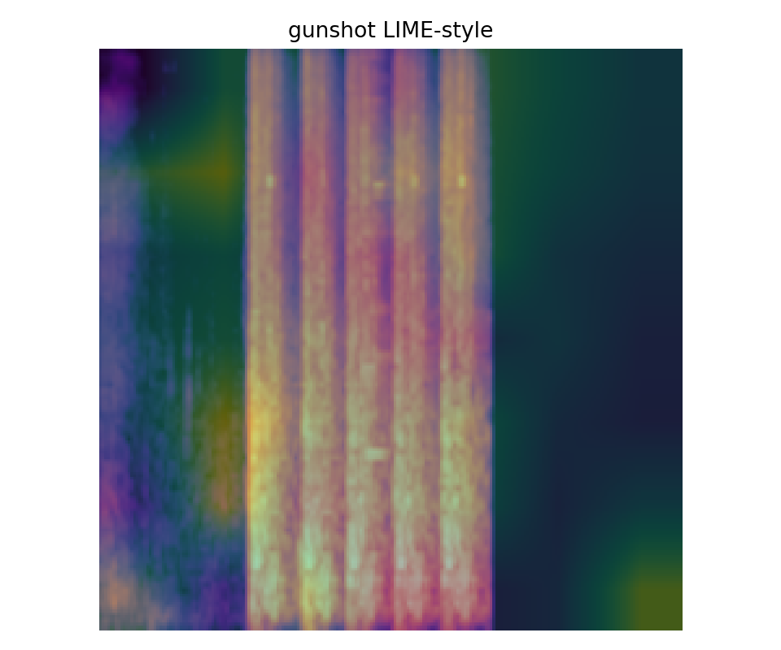
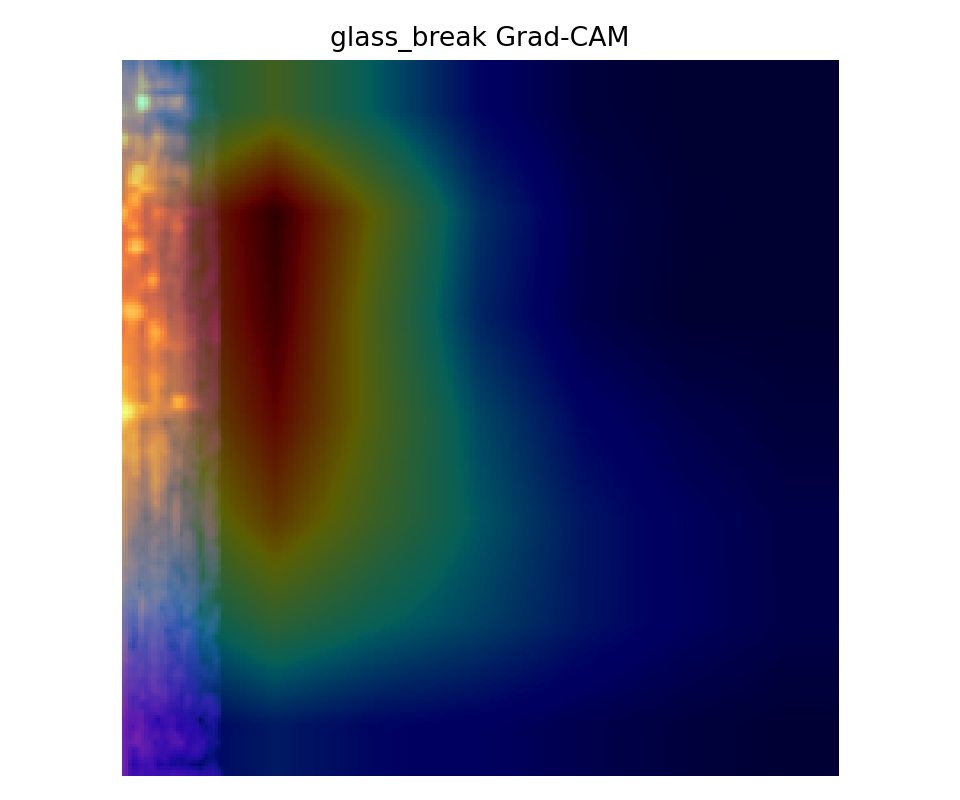
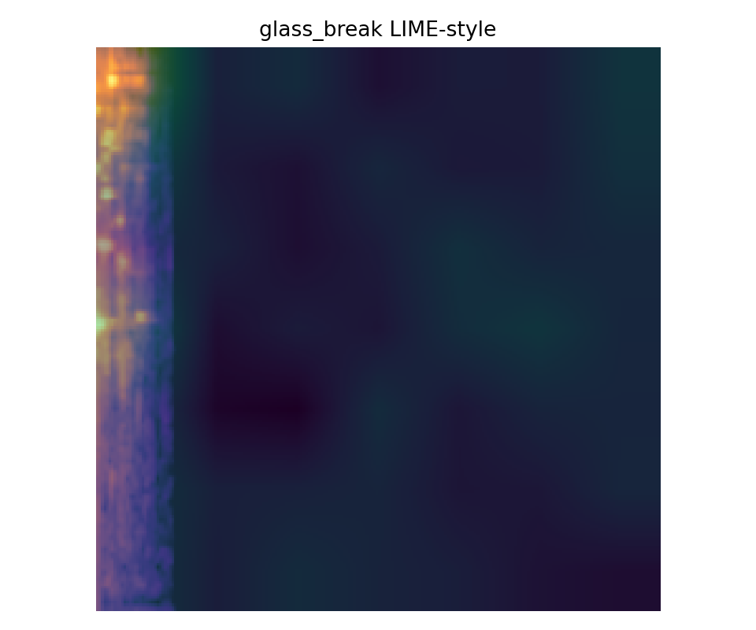
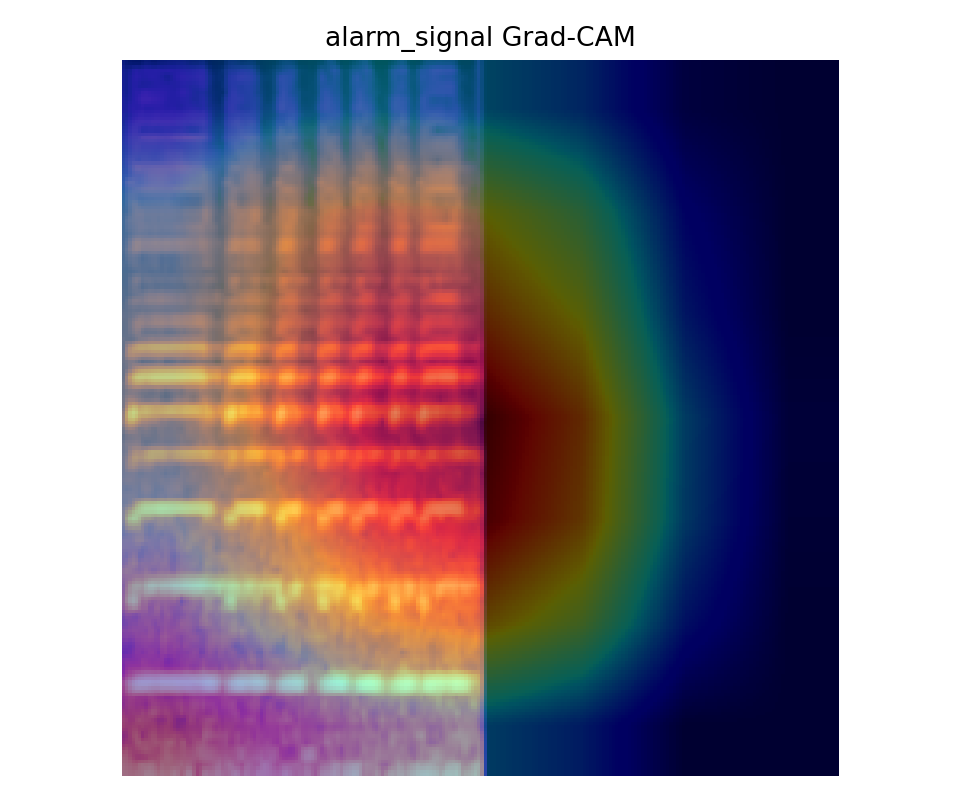
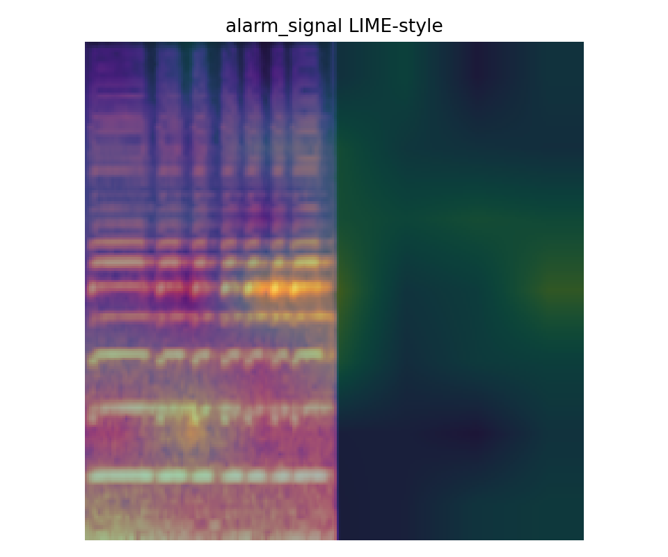
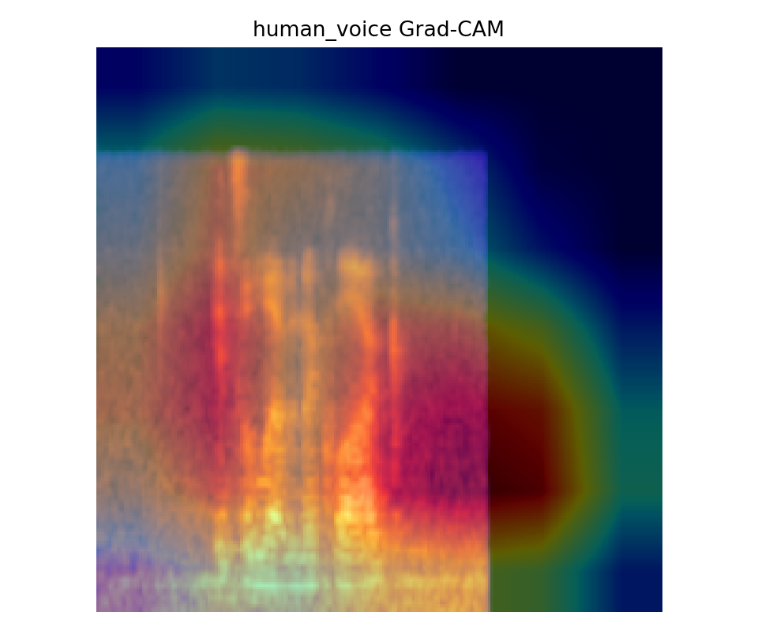
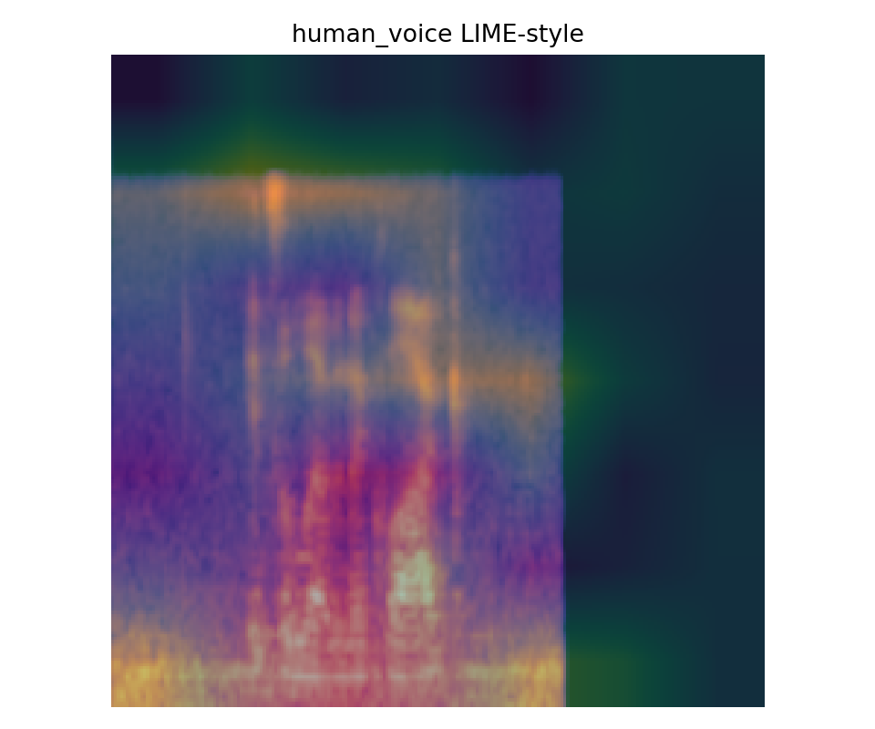
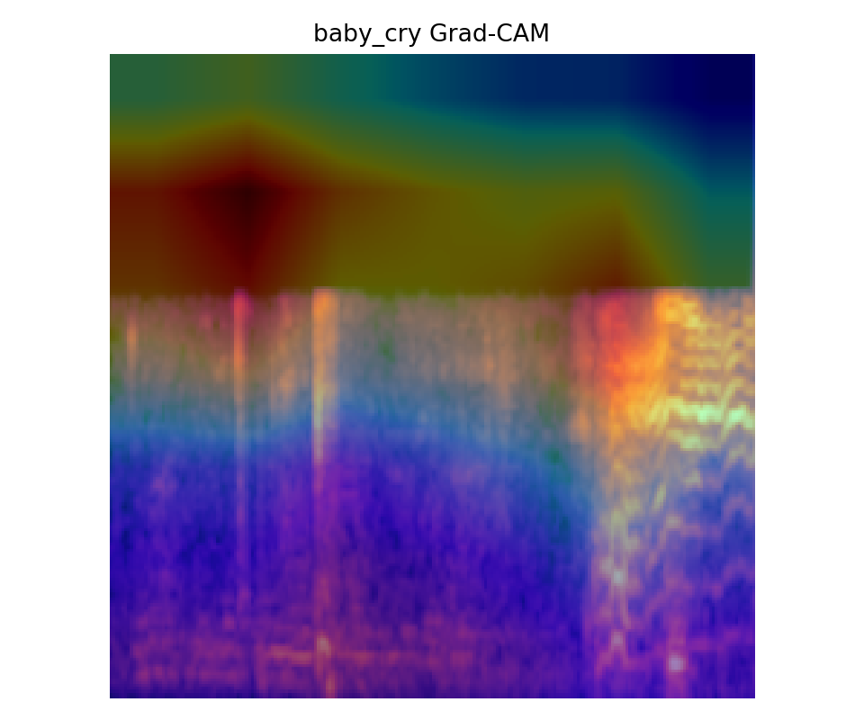
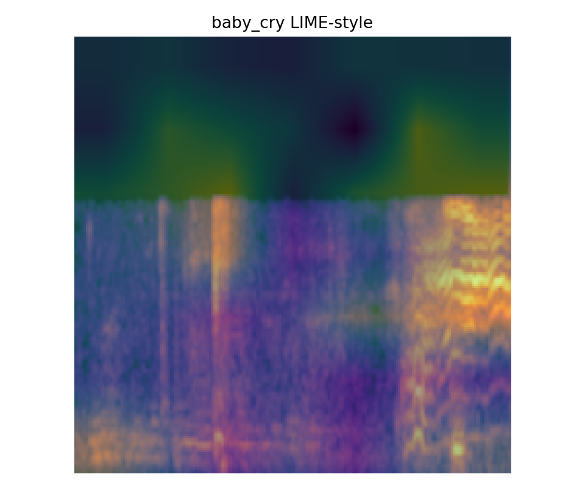
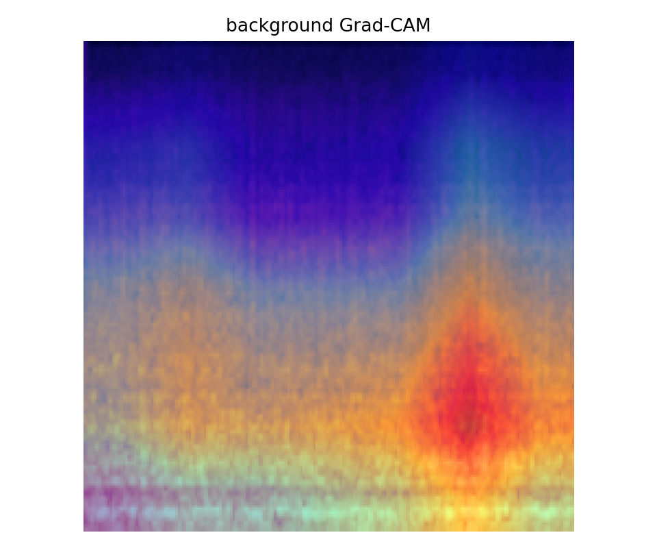
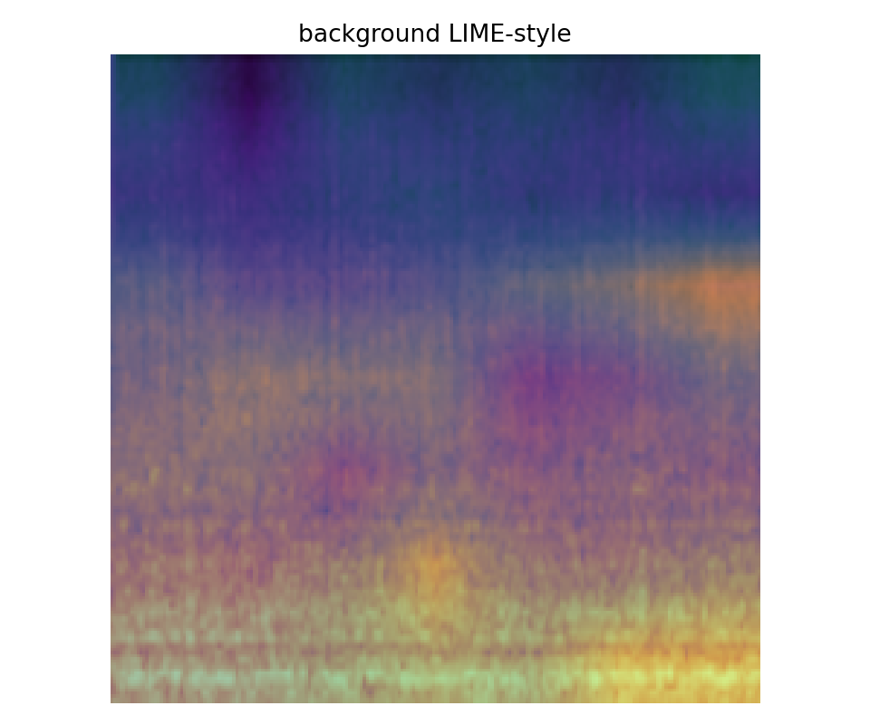
Gradio And FastAPI Runtime
The local demo is stored in project/. It exposes a browser interface and API endpoints using the same runtime pipeline and final checkpoint.
Audio upload ResNet34 event model Whisper-ready transcription Optional diarization Optional HF classifiers Integrity screen JSON export
| Route | Purpose |
|---|---|
/gradio | Interactive audio analysis interface. |
/models | Checkpoint readiness, final metrics, classes, and optional runtime status. |
/health | Service health and model readiness. |
/analyze | POST endpoint for audio upload and JSON analysis. |
Run Command
The demo can also be started with project/run_demo.bat. Optional runtime packages are listed in project/requirements-optional.txt.
Files Used By This Documentation
| Artifact | Path | Role |
|---|---|---|
| Comparison notebook | audio_model_comparison_vf.ipynb | Scratch and candidate pretrained model comparison, leaderboard output, and final model selection record. |
| Final training notebook | audio_resnet_final_vf.ipynb | Final ResNet34 training, calibration, evaluation, XAI generation, and export workflow. |
| Final metrics JSON | audio_resnet_final_vf/final_metrics.json | Final test metrics used in the top summary and final metrics table. |
| Final metrics CSV | audio_resnet_final_vf/final_metrics.csv | CSV copy of the final metric row. |
| Final summary JSON | audio_resnet_final_vf/final_summary.json | Final model, metrics, dataset audit, XAI file list, and output path summary from the final notebook. |
| ResNet metrics JSON | audio_resnet_final_vf/resnet34_final_metrics.json | Per-model metrics JSON saved with the final ResNet34 run. |
| Training history | audio_resnet_final_vf/resnet34_final_history.csv | Frozen and full fine-tuning history for loss, training accuracy, validation F1, and learning rates. |
| Dataset audit | audio_resnet_final_vf/dataset_audit.json | Source counts, raw counts, deduplicated counts, capped counts, class list, and split counts. |
| Classification report | audio_resnet_final_vf/classification_report.csv | Per-class precision, recall, F1, support, accuracy, macro average, and weighted average. |
| Top confusions | audio_resnet_final_vf/top_confusions.csv | Observed class confusions from the final test output. |
| Dataset split plot | audio_resnet_final_vf/dataset_split.png | Visual summary of train, validation, and test split counts. |
| Learning curve | audio_resnet_final_vf/learning_curve.png | Training loss, training accuracy, and validation macro F1 over the final run. |
| Confusion matrix | audio_resnet_final_vf/confusion_matrix.png | Raw and normalized confusion matrix plot from the final run. |
| Calibration plot | audio_resnet_final_vf/calibration.png | Confidence distribution and calibration curve. |
| Final score summary | audio_resnet_final_vf/final_score_summary.png | Per-class F1 and final macro F1 summary image. |
| XAI manifest | audio_resnet_final_vf/xai/xai_manifest.json | Grad-CAM and LIME-style artifact index for each final class. |
| Runtime app | project/app.py | Gradio and FastAPI entry point. |
| Runtime pipeline | project/pipeline.py | Audio loading, segmentation, spectrogram conversion, ResNet34 inference, optional context modules, integrity screen, and JSON output. |
| Runtime requirements | project/requirements.txt and project/requirements-optional.txt | Required and optional packages for the local demo runtime. |
| Runtime helper | project/run_demo.bat | Local launch helper for the demo runtime. |
| Sample audio | project/samples/test1.mp3 | Included sample file for local runtime testing. |
{kind=link}
{kind=link}
{kind=link}